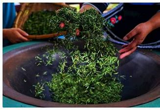
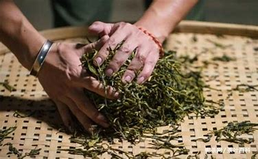
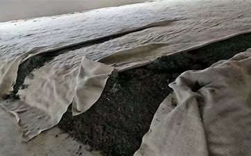
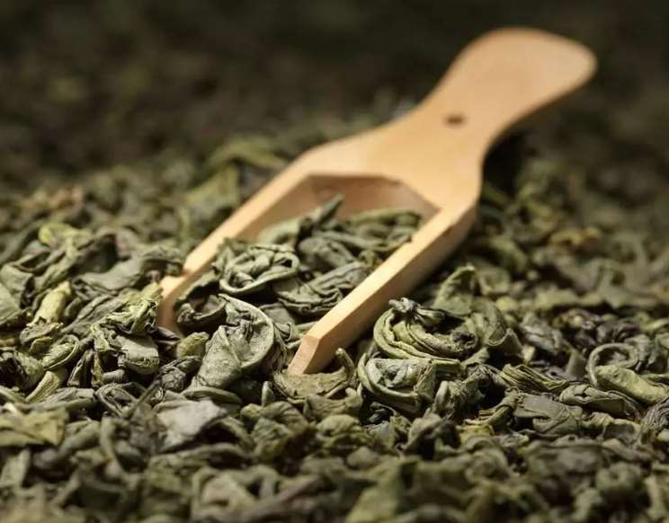

杀青
杀青是指把鲜叶投入适温锅中或杀青机中使茶叶变软，便于揉捻成形，同时散除鲜叶青味，促进良好香气的形成。

揉捻
揉捻可分为初揉和复揉。 初揉：通常，选用制作黑茶的原料较为粗老。 复揉：复揉这道工序是在渥堆后进行的

渥堆
渥堆是形成黑茶色香味的关键性工序。黑茶渥堆应有适宜的条件.渥堆过程中通常要进行翻堆，以使渥堆均匀。其中，普洱生茶的加工不经渥堆处理

干燥
黑茶干燥分为自然晾置和烘焙 自然晾置：此种干燥方法较为传统。茶叶踩压成包压制成形后，置于阴凉通风之处晾干。 人工烘焙：是指由人工设置的
